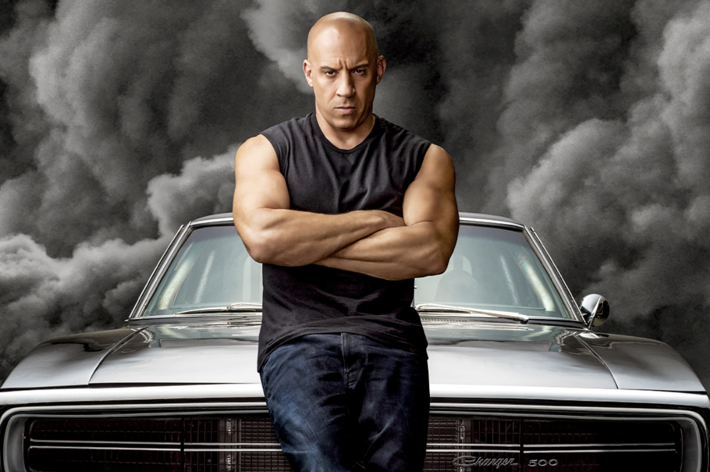
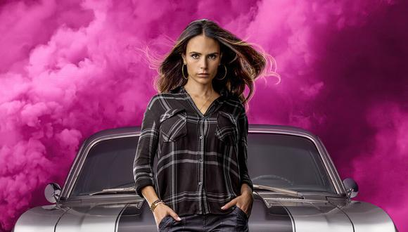
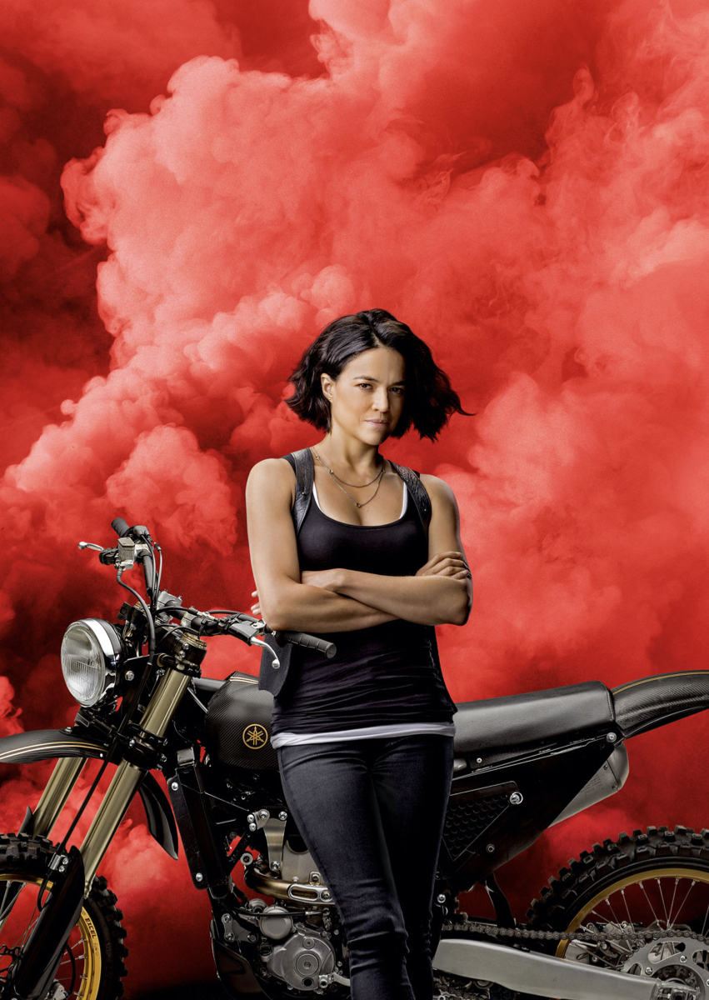

Personaxes RSS

Dominic Toretto
Personaje de Fast and Furious
Más información sobre Dominic Toretto
Roman Pearce
Personaje de Fast and Furious
Más información sobre Roman Pearce

Mia Toretto
Personaje de Fast and Furious
Más información sobre Mia Toretto

Letty Ortiz
Personaje de Fast and Furious
Más información sobre Letty Ortiz